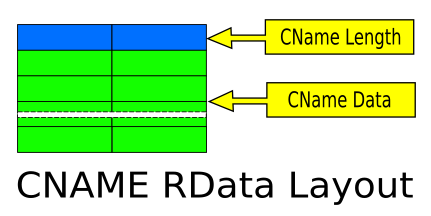

Topic Path: Symbol Reference > Classes > TCNRecord Class
Represents a resource record returned from a DNS query that includes Canonical Name resource record types.
TCNRecord = class(TNAMERecord);
TCNRecord is a TNameRecord descendant that represents a resource record returned in the results for a DNS query. TCNRecord is a collection item created to represent a resource resource returned when TIDNSResolver.QueryRecords includes the value qtCN for Mail Exchange resource records.
Canonical Name resoure records are used to indicate the canonical or primary name for the owner. Canonical Name resource records cause no additional section processing, but Canonical Names may choose to restart the query at the Canonical Name in certain cases. See the Canonical Name resoure records uses the same DNS packet layout as other TResultRecord-based responses, but extends the use of RData to include the following definition and format:

CNAME - Domain name which specifies the canonical or primary name for the owner. The owner name is an alias.
TCNRecord extends TNameRecord to implement the specifics of accessing RData values as properties, including HostName. HostName is used to store the CNAMe value from the resource record.
TCNRecord also overrides the Parse method to read the values in RData into their property counterparts.
TNameRecord TResultRecord TQueryResult TIdDNSResolver.QueryRecords
|
Copyright © 1993-2006, Chad Z. Hower (aka Kudzu) and the Indy Pit Crew. All rights reserved.
|
|
Post feedback to the Indy Docs Newsgroup.
|


 Hierarchy
Hierarchy